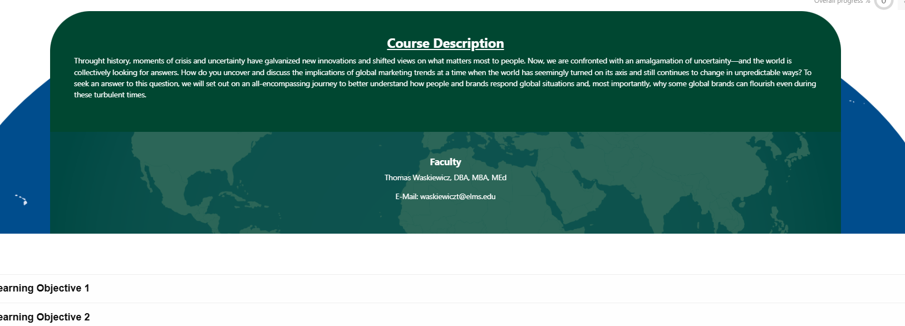
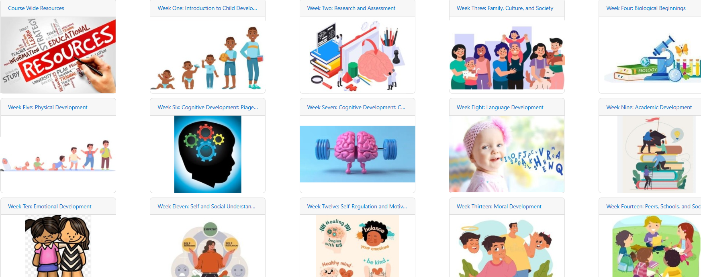
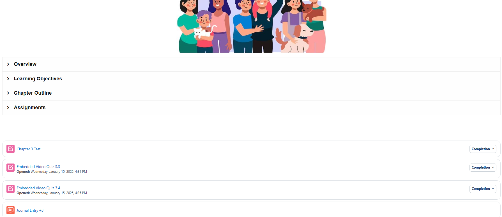

Course Designs
When designing courses, visual flair can help attract students to a course page but ultimately we need it to function as a utility for accessing learning materials, submiting assignments, and for the instructor to be able to accurately assess student work
A Pleasing Aesthetic
The design below provides a more pleasing welcome to the course and provides a familar, thematically appropriate landing page for students every time they log into the course.

Alternative Course Display Methods
In Moodle you can use altnernative display methods to organize your content. Below is a grid format that utilizes class meetings as a division metric, themed around specific chapters in the associated textbook.
Each display method has advantages and disadvantages - but notice how there is an easy-to-track Progress bar for students to see how far along they are within any individual section of the course. This makes completion tracking much easier for students.

The Grid Format
The grid format is similar to the Tiles format above, but allows for even more customization of iconography. You can also display completion tracking as a part of this display method.


Welcome Video
Going beyond the syllabus, we can create Introductory Videos that introduce yourself, your course, and the flow of your instruction to students.
When generating content, best practice is to use Video first, Audio second, and Text third - but you should use all three!